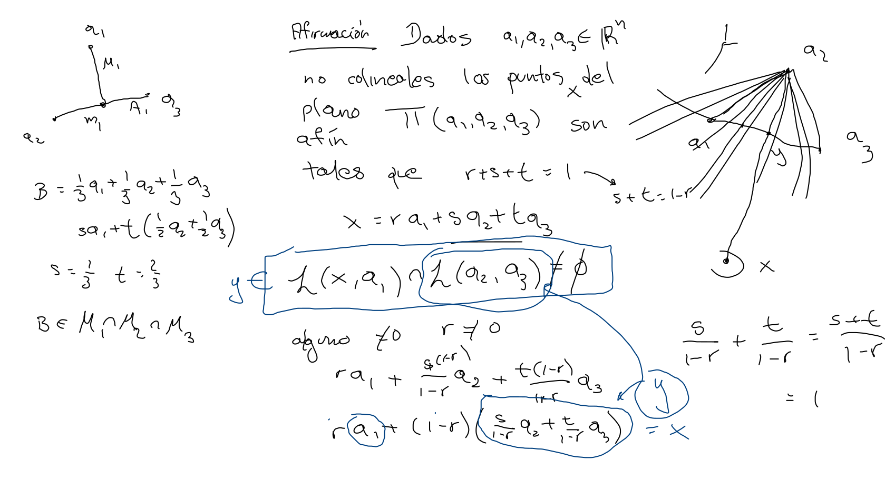

Continuando con las ideas de la demostración sobre la concurrencia de las medianas de cualquier triángulo; observamos que cualquier punto del plano cartesiano puede ser representado, así como lo hicimos con el baricentro, como una suma de productos escalares de los vértices.
Dado un punto x en e plano, seleccionamos uno de los vértices, digamos a1. Denotamos por A1 el lado opuesto a a1 y por y la intersección de la recta que contiene a A1 con la que pasa por x y a1,
dado que 1−λ1λ2+1−λ1λ3=1, concluimos que P está en la recta que pasa por a1 y Q=1−λ1λ2a2+1−λ1λ3a3, el cual se sitúa en la recta que contiene a A1.

Definición Dados tres puntos {ai}i=13 en Rn no colineales, el plano afín que pasa por ellos es
Π={i=1∑3λiai∣λi∈R,i=1∑3λi=1}
el conjunto de todas las combinaciones afines de los tres puntos.